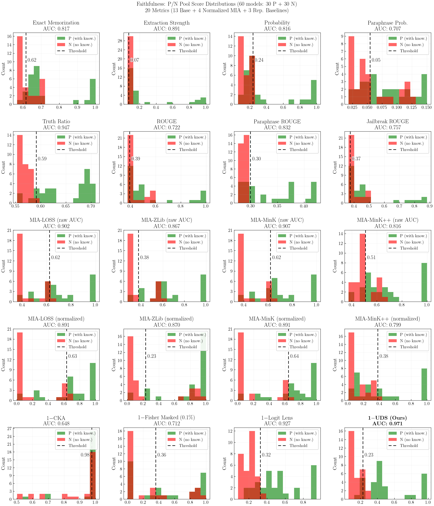
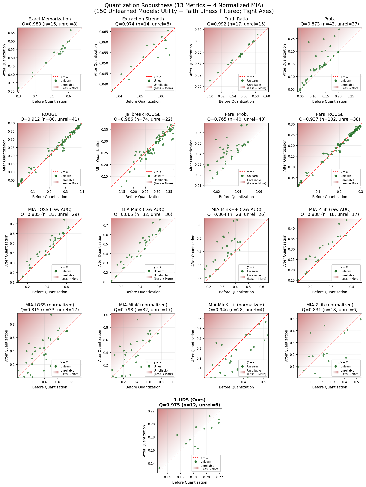
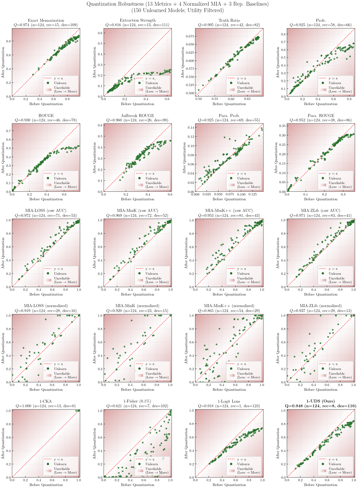
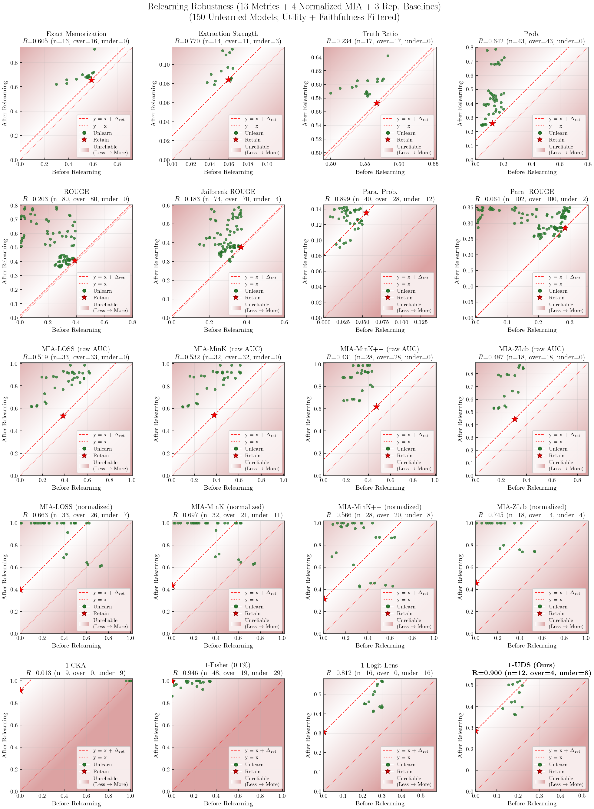
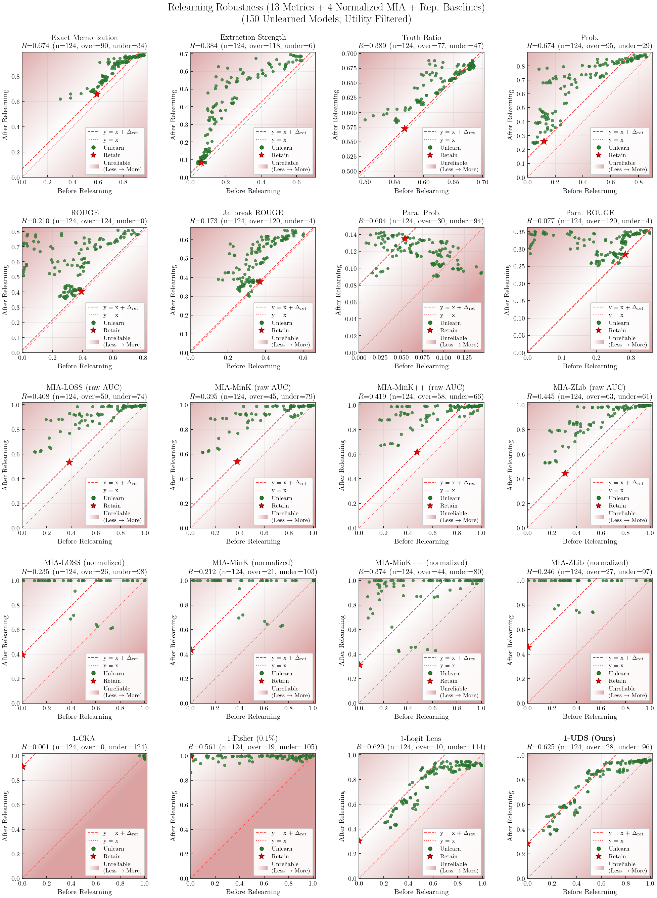

1Sungkyunkwan University 2Samsung Research
We present the Unlearning Depth Score (UDS), a mechanistic metric that quantifies the depth of unlearning by measuring how much target knowledge is recoverable through two-stage activation patching. This page provides: (i) an interactive walkthrough of the UDS pipeline, (ii) a meta-evaluation comparing 20 metrics on faithfulness and robustness, and (iii) per-method benchmark results across 150 unlearned models. The results below benchmark UDS on the TOFU [12] dataset (forget10) using Llama-3.2-1B-Instruct and the Open-Unlearning [18] framework.
Construct a prompt from question and answer prefix, and mark the entity span to evaluate.
Patch retain model's hidden states into the full model at each layer.
Log-probs are compared token-by-token under teacher forcing.
Large drops reveal layers encoding knowledge the retain model lacks.
Repeat with the unlearned model's hidden states.
Drops matching Stage 1 = erased; near-zero = knowledge intact.
① Filter layers that significantly encode the target knowledge.
② Compute per-layer erasure ratio from the two stages.
③ Aggregate into a final score: 0 (intact) → 1 (erased).
We evaluate 20 metrics to measure how reliable each unlearning metric is, using the Open-Unlearning benchmark framework.
Faithfulness: How well each metric separates knowledge-present (P, 30 models) vs knowledge-absent (N, 30 models), measured by AUC-ROC.
Robustness: Stability of each metric under post-hoc perturbations (4-bit quantization, 1-epoch relearning).
Faithfulness = AUC-ROC over P/N pools (30 knowledge-present vs 30 knowledge-absent models)
Robustness = HM(Q, R) — symmetric (bidirectional)Quantization (Q) $= 1 - \dfrac{|m_{\text{after}} - m_{\text{before}}|}{|m_{\text{before}}| + |m_{\text{after}}|}$ — penalizes both recovery and destruction after 4-bit NF4 quantizationRelearning (R) $= 1 - \dfrac{|\Delta_{\text{unl}} - \Delta_{\text{ret}}|}{|\Delta_{\text{unl}}| + |\Delta_{\text{ret}}|}$, $\Delta = m_{\text{after}} - m_{\text{before}}$ — penalizes both over- and under-recovery relative to retainOverall = HM(Faithfulness, Robustness)
ES [1] (Extraction Strength) — fraction of answer extractable via greedy decoding. $1 - k/T$, $k$ = earliest match positionEM [2] (Exact Memorization) — token-level position match ratio. $\sum \mathbb{1}(\text{pred}_t = \text{label}_t)\, /\, T$Prob — geometric mean of per-token probabilities. $\exp\!\bigl(-(1/T)\sum \text{CE}_t\bigr)$ParaProb — geometric mean of Prob across paraphrased answer variants.Truth Ratio — normalized correct vs. incorrect probability. $p_c / (p_c + p_w)$, $p = \exp(-\text{avg loss})$
ROUGE — standard prompt.Para. ROUGE — paraphrased prompt.Jailbreak ROUGE — adversarial prompt (prefixed with “Sure, here is the answer:”).
MIA-LOSS [9] — average cross-entropy. $\frac{1}{T}\sum_t \mathcal{L}_t$MIA-ZLib [1] — loss normalized by compression length. $\ell\, /\, |\texttt{zlib}(x)|$, $\ell = \frac{1}{T}\sum_t \mathcal{L}_t$MIA-Min-K [7] — mean of bottom-$k$% log-probs. $-\frac{1}{\lceil kT\rceil}\sum_{t \in \mathcal{B}_k} \log p_t,\;\; k{=}0.4$MIA-Min-K++ [8] — standardized Min-K. $z_t = (\log p_t - \mu_t) / \sigma_t$, then Min-K on $z_t$sLOSS · sZLib · sMin-K · sMin-K++
CKA [3] — representational similarity via kernel alignment, normalized against the full–retain anchor per layer.Logit Lens [4] — decodes each layer’s hidden states through the full model’s frozen decoder (LayerNorm + lm_head) to measure decodable knowledge per layer.Fisher Masked [5] — diagonal Fisher Information with top-$p$% parameter masking. Focuses on parameters where retain has higher sensitivity than full on the forget set. $p$ ∈ {0.01%, 0.1%, 1%}.UDS (Ours) — Measures whether knowledge remains recoverable via activation patching.| Metric | Overall ↑ | Faithfulness ↑ | Robustness | ||
|---|---|---|---|---|---|
| Aggregate ↑ | Quantization ↑ | Relearning ↑ | |||
| Loading... | |||||





We evaluate 152 models (8 methods × varying hyperparameters × 2 epochs + full + retain) across three axes. All unlearned model checkpoints are from the Open-Unlearning framework.
Memorization: How much target knowledge was forgotten. (↑ higher = more forgotten)
Privacy: How well sensitive information from the forget set is protected from being extracted. (↑ higher = better protected)
Utility: How well the model retains general capabilities on non-target knowledge. (↑ higher = better retention)
Overall: Harmonic mean of all three axes. (↑ higher = better)
Privacy = HM(MIA, UDS), capturing both statistical (MIA) and mechanistic (UDS) aspects.
Mem. $= \text{HM}(1{-}\text{ES},\; 1{-}\text{EM},\; 1{-}\text{ParaProb},\; 1{-}\text{TruthRatio})$MIA $= \text{HM}(s_{\text{LOSS}},\; s_{\text{ZLib}},\; s_{\text{Min-K}},\; s_{\text{Min-K++}})$Privacy = HM(MIA, UDS)
ModelUtility (MU) = HM(retain_Prob, retain_ROUGE, retain_TruthRatio, ra_Prob, ra_ROUGE, ra_TruthRatio, wf_Prob, wf_ROUGE, wf_TruthRatio)Fluency = generation fluency scoreUtility = HM(MU, Fluency), then normalized: $\text{Utility}_{\text{rel}} = \text{Utility}\, /\, \text{Utility}_{\text{full(epoch)}}$
Overall $= \text{HM}(\text{Mem.},\; \text{Privacy},\; \text{Utility}_{\text{rel}})$
| Method | Learning Rate | Swept Hyperparameters | Fixed | Epochs | Models |
|---|---|---|---|---|---|
| GradDiff [12], IdkNLL [12], IdkDPO [12], NPO [13], AltPO [14] | {1e-5, 2e-5, 5e-5} | $\alpha$ ∈ {1, 2, 5} | β = 0.1 | {5, 10} | 5 × 3 × 3 × 2 = 90 |
| SimNPO [15] | {1e-5, 2e-5, 5e-5} | $\beta$ ∈ {3.5, 4.5}, $\gamma$ ∈ {0.125, 0.25} | δ = 1, α = 1 | {5, 10} | 1 × 3 × 4 × 2 = 24 |
| RMU [16] | {1e-5, 2e-5, 5e-5} | layer ∈ {5, 10, 15} | steering coeff = 10 | {5, 10} | 1 × 3 × 3 × 2 = 18 |
| UNDIAL [17] | {1e-5, 1e-4, 3e-4} | $\alpha$ ∈ {1, 2, 5} | β = 10 | {5, 10} | 1 × 3 × 3 × 2 = 18 |
| Total: 150 unlearned + full + retain | 152 | ||||
| Model | Overallw/o UDS ↑ | Overallw/ UDS ↑ | Mem. ↑ | Privacy ↑ | Utility ↑ | LL ↑ | UDS ↑ | |
|---|---|---|---|---|---|---|---|---|
| Loading... | ||||||||